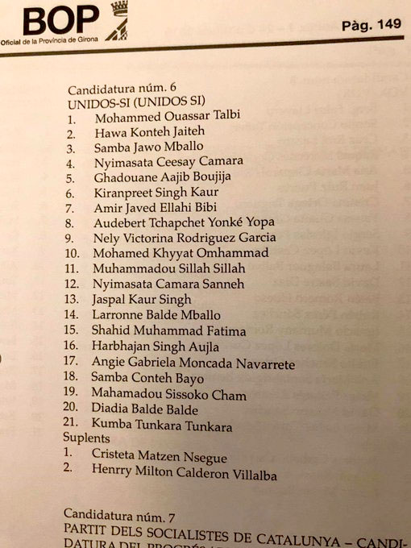

SIN PALABRAS: NO SE PIERDAN LA LISTA ELECTORAL DE PODEMOS EN SALT (GERONA)
somatemps.me
 Reenviado
Reenviado
No hay palabras. Juzguen ustedes. Este es el verdadero programa de somatemps.me
https://somatemps.me/2019/04/25/sin-palabras-no-se-pierdan-la-lista-electoral-de-podemos-en-salt-gerona/
Reenviado
Elecciones generales: PDeCAT y ERC exigirán a Sánchez el indulto a los golpistas para apoyarle tras el 28-A. Pedro Sánchez ocultar el estado de sus negociaciones.
https://okdiario.com/espana/pdecat-erc-exigiran-sanchez-indulto-golpistas-apoyarle-28-3922160El Centro Nacional de Inteligencia (CNI) ocultó la existencia de un comunicado del Estado Islámico pidiendo el voto para Podemos.
https://somatemps.me/2018/12/14/el-centro-nacional-de-inteligencia-cni-oculto-la-existencia-de-un-comunicado-estado-islamico-pidiendo-el-voto-para-podemos/ Reenviado
OJO PENSIONISTAS !!!
Ayer se supo que el Partido Popular despidió a su informático por hacer público el pacto secreto que tienen con C,s y VOX si ganan las elecciones.
En dicho documento acuerdan una BAJADA del 20% de las pensiones para el año 2020 argumentando dicha decisión en en que la riqueza hay que repartirla al sector social más necesitado y a la insostenibilidad del Sistema Público de Pensiones qué depende directamente de las personas que trabajan y que no se puede sostener si hay mucho Paro y que de no hacerlo quebraría el Sistema por lo que ningún pensionista seguiría cobrando. Al mismo tiempo van a hacer una campaña publicitaria muy fuerte sobre los beneficios de contratar un sistema privado de pensiones, lo que conllevaría en pocos años a la desapariciónde las pensiones tal y como la conocemos hasta hoy.
Ante esta alarmante noticia rogamos a todas las personas que se movilicen para votar el próximo domingo y que reenvíe este mensaje a todos sus contactos. Aún estamos a tiempo de evitarlo.
Pásalo
Reenviado
OJO PENSIONISTAS !!!
Ayer PSOE despidió a su informático por hacer público el pacto secreto que tienen PSOE Unidas PODEMAS y Bildu
En dicho documento acuerdan una BAJADA del 20% de las pensiones para el año 2020 argumentando dicha decisión en en que la riqueza hay que repartirla al sector social más necesitado y a la insostenibilidad del Sistema Público de Pensiones qué depende directamente de las personas que trabajan y que no se puede sostener si hay mucho Paro y que de no hacerlo quebraría el Sistema por lo que ningún pensionista seguiría cobrando. Al mismo tiempo van a hacer una campaña publicitaria muy fuerte sobre los beneficios de contratar un sistema privado de pensiones, lo que conllevaría en pocos años a la desapariciónde las pensiones tal y como la conocemos hasta hoy.
Ante esta alarmante noticia rogamos a todas las personas que se movilicen para votar el próximo domingo y que reenvíe este mensaje a todos sus contactos. Aún estamos a tiempo de evitarlo.
Pásalo